第一章 概述
1.3 互联网的组成
边缘部分： 由所有连接在互联网上的主机组成，由用户直接使用，用来进行通信（传送数据、音频或视频）和资源共享。
核心部分：由大量网络和连接这些网络的路由器组成，为边缘部分提供服务（提供连通性和交换）。
分组转发是网络核心部分最重要的功能。
互联网的核心部分采用分组交换技术。
电路交换和分组交换比较：
若要连续传送大量的数据，且其传送时间远大于连接建立时间，则电路交换的传输速率较快。报文交换和分组交换不需要预先分配传输带宽，在传送突发数据时可提高整个网络的信道利用率。由于一个分组的长度往往远小于整个报文的长度，因此分组交换比报文交换的时延小，同时也具有更好的灵活性。
计算机网络的性能指标
发送时延 = 数据帧长度（bit）/ 发送速率（bit/s）
带宽是最大的发送速率，涉及到带宽也是速率的单位
关于单位：
数据帧长度/数据块大小：千 = K = 210 = 1024，兆 = M = 220 = 1024 K，吉 = G = 230 = 1024 M（只有在表示数据大小是使用）
速率：K = 103, M = 106, G = 109
传播时延 = 信道长度（米）/ 信号在信道上的传播速率（米/秒）
发送时延发生在机器内部的发送器中，与传输信道的长度（或信号传送的距离）没有任何关系。
传播时延则发生在机器外部的传输信道媒体上，而与信号的发送速率无关。信号传送的距离越远，传播时延就越大。
总时延 = 发送时延 + 传播时延 + 处理时延 + 排队时延
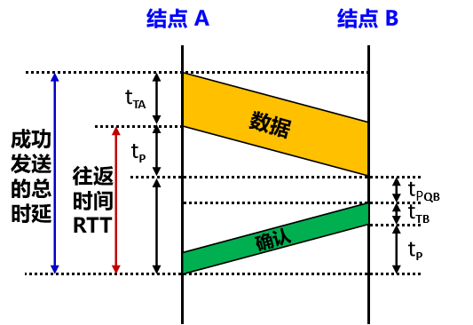
往返时间 RTT：表示从发送方发送完数据，到发送方收到来自接收方的确认总共经历的时间。
有效数据率： 数据长度 / 总时长，总时长是发送时延 + RTT（有时候RTT没给出，要自己根据传播实验和节点B的确认数据发送时延算）（这里的数据长度只包括数据字段，不包含首部）
利用率
五层协议的体系结构
第二章 物理层
曼彻斯特编码
码元：在使用时间域（简称为时域）的波形表示数字信号时，代表不同离散数值的基本波形。使用二进制编码时，只有两种不同的码元： 0 状态，1 状态。
曼彻斯特编码：位周期中心的向上跳变代表 0，位周期中心的向下跳变代表 1。但也可反过来定义。
差分曼彻斯特编码：在每一位的中心处始终都有跳变。位开始边界有跳变代表 0，而位开始边界没有跳变代表 1。
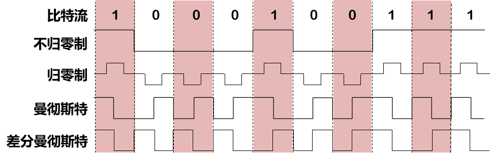
奈氏定理和香农定理
码元传输的最高速率
理想信道（不考虑噪声影响）：奈氏定理 \[ C_{max} = 2W \log_2{V} \] W是信号的带宽，V是物理状态数
信噪比(dB) = 10 log10(S/N ) (dB)
非理想信道：香农定理 \[ C_{max} = W \log_2{(1+\frac{S}{N})} \] 2.3-2.6应该是不重要
第三章 数据链路层
CRC冗余码的计算
CSMA/CD 协议工作流程
最小帧长的确定：其发送时延必须大于检测到碰撞所需的时间（即往返时间）
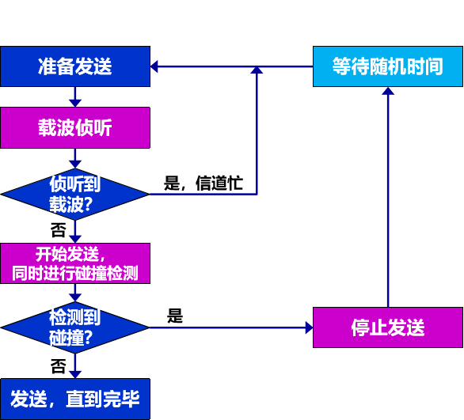
以太网的端到端往返时延 2τ 称为争用期，或碰撞窗口。10Mbit/s 具体的争用期时间 = 51.2 μs。（经过争用期这段时间还没有检测到碰撞，才能肯定这次发送不会发生碰撞）（都是512bit时间）
碰撞后重传的时机：
采用截断二进制指数退避 (truncated binary exponential backoff) 确定。发生碰撞的站停止发送数据后，要退避一个随机时间后再发送数据。
基本退避时间 = 2τ 从整数集合 [0, 1, … , (2k - 1)] 中随机地取出一个数，记为 r。
重传所需的时延 = r ⅹ 基本退避时间。
参数 k = Min[重传次数, 10]
第 1 次冲突重传时：
k = 1，r 为 {0，1} 集合中的任何一个数。
第 2 次冲突重传时：
k = 2，r 为 {0，1，2，3} 集合中的任何一个数。
第 3 次冲突重传时：
k = 3，r 为 {0，1，2，3，4，5，6，7} 集合中的任何一个数。
当重传达 16 次仍不能成功时即丢弃该帧，并向高层报告。
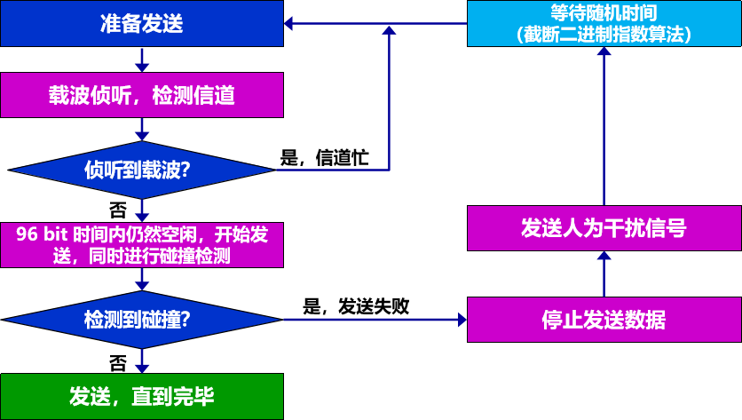
以太网交换机的自学习功能
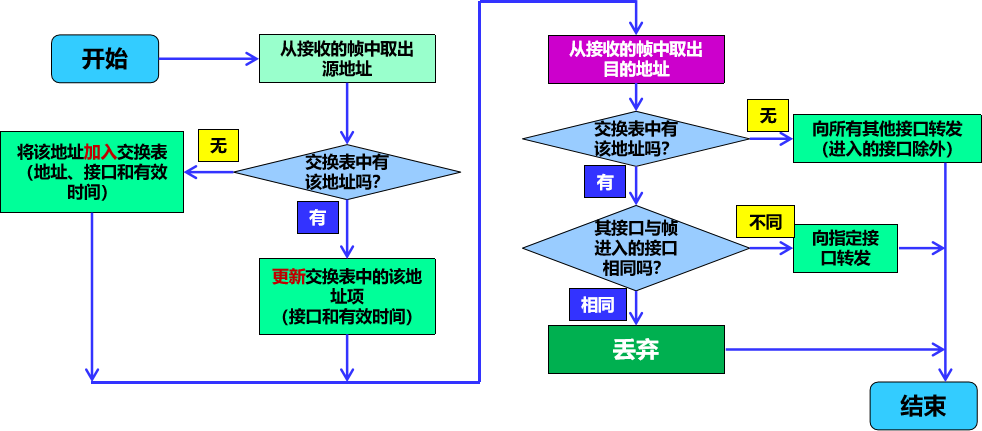
要不要转发，取决于源地址和目的地址是不是相同的接口，如果是相同的接口就不用转发，如果不是就转到那个接口，如果转发表当中没找到目的地址，那就向所有端口（除了进入的）转发。
以太网MAC帧
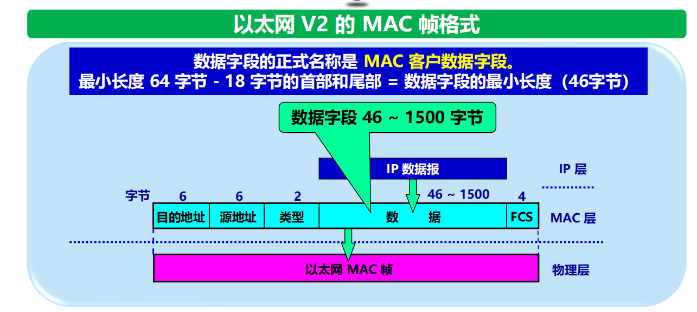
以太网数据字段最大长度1500B，最小46B，大于1500B（数据加首部）需要分片，IP报文小于46B需要填充
第四章 网络层
网络地址
CIDR 记法：斜线记法 (slash notation)a.b.c.d / n：二进制 IP 地址的前 n 位是网络前缀。例如：128.14.35.7/20：前 20 位是网络前缀。
网络地址 = (二进制的 IP 地址) AND (地址掩码)
| 网络前缀长度 | 点分十进制 | 说明 |
|---|---|---|
| /32 | 255.255.255.255 | 就是一个 IP 地址。这个特殊地址用于主机路由 |
| /31 | 255.255.255.254 | 只有两个 IP 地址，其主机号分别为 0 和 1。这个地址块用于点对点链路 |
| /0 | 0.0.0.0 | 同时 IP 地址也是全 0，即 0.0.0.0/0。用于默认路由。 |
同一个局域网上的主机或路由器的IP 地址中的网络号必须一样。
路由器的每一个接口都有一个不同网络号的 IP 地址。
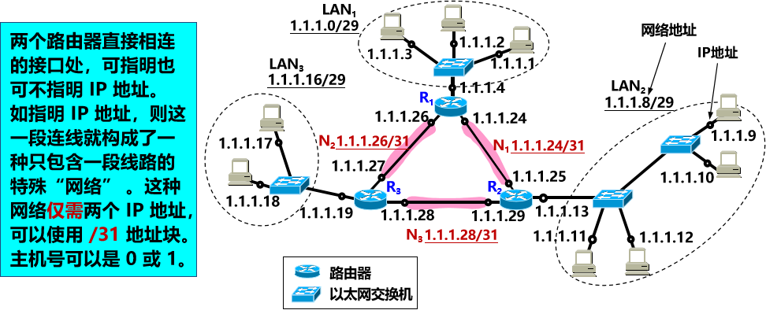
IP 数据报
IP 数据报首部的固定部分中的各字段
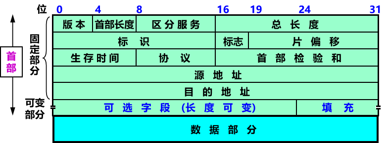
标识 (identification) ——占 16 位，它是一个计数器，用来产生 IP 数据报的标识。每产生一个数据报，计数器加1。 作用为辅助分片数据正确重装。（同一个原始 IP 数据报的所有分片标识相同）
MF=1 表示后面还有分片，MF=0 表示最后一个分片。
DF (Don't Fragment) 。只有当 DF=0 时才允许分片
片偏移——占 13 位，指出：较长的分组在分片后某片在原分组中的相对位置。片偏移以 8 个字节为偏移单位。即就是除去最后一个数据报片，其余分片长度一定是8字节的整数倍。（注意是8字节不是8bit）
| 协议名 | ICMP | IGMP | IP | TCP | EGP | IGP | UDP | IPv6 | ESP | AH | ICMP-IPv6 | OSPF |
|---|---|---|---|---|---|---|---|---|---|---|---|---|
| 协议字段值 | 1 | 2 | 4 | 6 | 8 | 9 | 17 | 41 | 50 | 51 | 58 | 89 |
最长前缀匹配：
使用 CIDR 时，在查找转发表时可能会得到不止一个匹配结果。 最长前缀匹配 (longest-prefix matching) 原则：选择前缀最长的一个作为匹配的前缀。
主机路由 (host route) 又叫做特定主机路由。是对特定目的主机的 IP 地址专门指明的一个路由。网络前缀就是 a.b.c.d/32，子网掩码全为1，AND后，结果为a.b.c.d。放在转发表的最前面。
默认路由 (default route)不管分组的最终目的网络在哪里，都由指定的路由器 R 来处理用特殊前缀 0.0.0.0/0 表示，子网掩码全为0。
路由器分组转发算法
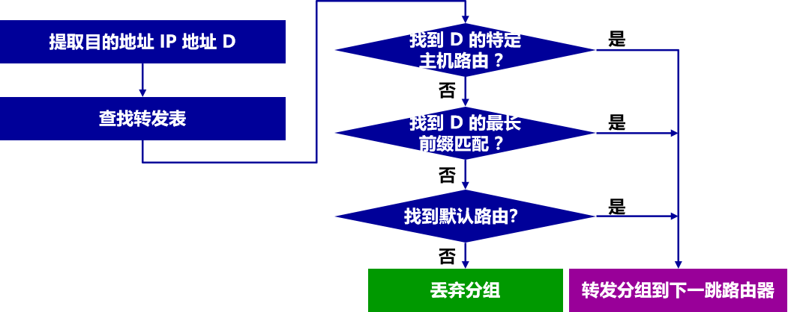
RIP“距离”
路由器到直接连接的网络的距离 = 1。
路由器到非直接连接的网络的距离 = 所经过的路由器数 + 1。
RIP 协议中的“距离”也称为“跳数”(hop count)，每经过一个路由器，跳数就加 1。
一轮一轮更新（类似广搜）
路由表
| 目的网络 | 距离 | 下一跳路由器 |
|---|---|---|
内部网关协议 OSPF
使用了 Dijkstra 提出的最短路径算法 SPF
第五章 运输层
常用的熟知端口
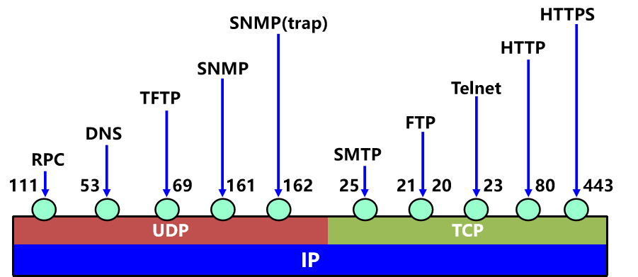
TCP 报文段的首部格式
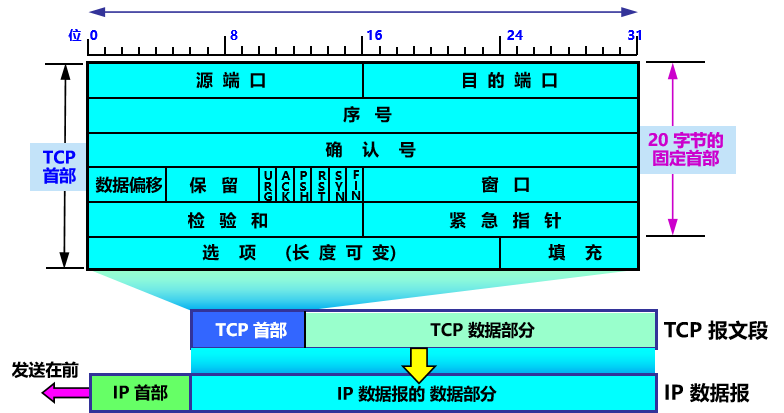
确认号：占 4 字节，是期望收到对方的下一个报文段的数据的第一个字节的序号。若确认号 = N，则表明：到序号 N – 1 为止的所有数据都已正确收到。
数据偏移 即首部长度
确认 ACK：控制位。只有当 ACK =1 时，确认号字段才有效。当 ACK =0 时，确认号无效。 TCP规定连接建立后所有传送的报文段都必须把ACK置为1。
同步 SYN (SYNchronization) ：控制位。
- 同步 SYN = 1 表示这是一个连接请求或连接接受报文。
- 当 SYN = 1，ACK = 0 时，表明这是一个连接请求报文段。（发起握手）
- 当 SYN = 1，ACK = 1 时，表明这是一个连接接受报文段。
窗口字段明确指出了现在允许对方发送的数据量。
UDP
传送数据之前不需要先建立连接。收到 UDP 报后，不需要给出任何确认。不提供可靠交付，但是一种最有效的工作方式。
无连接。发送数据之前不需要建立连接。
使用尽最大努力交付。即不保证可靠交付。
面向报文。UDP 一次传送和交付一个完整的报文。
没有拥塞控制。网络出现的拥塞不会使源主机的发送速率降低。
很适合多媒体通信的要求。 支持一对一、一对多、多对一、多对多等交互通信。
首部开销小，只有 8 个字节。
TCP
TCP 是面向连接的运输层协议。
每一条 TCP 连接只能有两个端点 (endpoint)，每一条 TCP 连接只能是点对点的（一对一）。
TCP 提供可靠交付的服务。无差错、不丢失、不重复、按序到达。
TCP 提供全双工通信。两端都设有缓存，可以临时存放数据。
面向字节流
- TCP 中的“流”(stream) 指的是流入或流出进程的字节序列。
- 面向字节流：虽然应用程序和 TCP 的交互是一次一个数据块，但 TCP 把应用程序交下来的数据看成仅仅是一连串无结构的字节流。
停止等待协议
每发送完一个分组就停止发送，等待对方的确认。在收到确认后再发送下一个分组。
信道利用率 = 发送时间 / 整个周期时间（发送时间是整个数据的发送时间，包含首部）
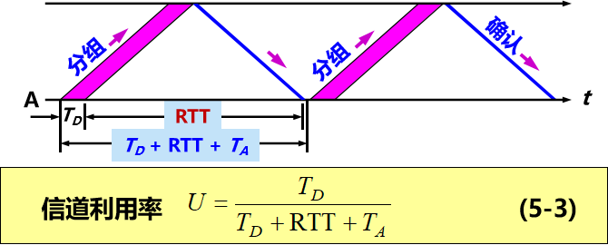
停止等待。发送方每次只发送一个分组。在收到确认后再发送下一个分组。
暂存：在发送完一个分组后，发送方必须暂存已发送的分组的副本，以备重发。
编号。对发送的每个分组和确认都进行编号。
超时重传。发送方为发送的每个分组设置一个超时计时器。若超时计时器超时位收到确认，发送方会自动超时重传分组。超时计时器的重传时间应当比数据在分组传输的平均往返时间更长一些，防止不必要的重传。
简单，但信道利用率太低。
拥塞控制
拥塞窗口 cwnd 增大：在每收到一个对新的报文段的确认，就把拥塞窗口增加最多一个发送方的最大报文段 SMSS (Sender Maximum Segment Size) 的数值。
rwnd：接收窗口
真正的发送窗口值 = Min (接收方通知的窗口值，拥塞窗口值)
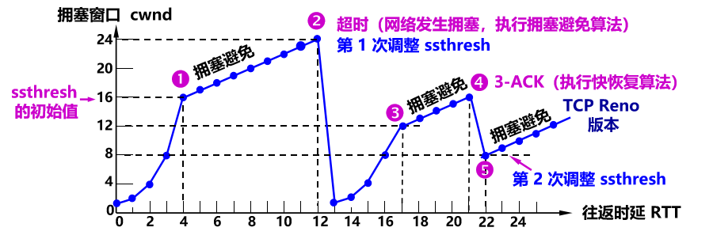
拥塞避免：拥塞窗口 cwnd 增大：每经过一个往返时间 RTT（不管在此期间收到了多少确认），发送方的拥塞窗口 cwnd = cwnd + 1。（当拥塞窗口 cwnd ≥ 阈值 ssthresh 时，不再指数增长，而是线性增长。）
快重传：发送方只要连续收到三个重复的确认，就立即进行重传（即“快重传”），这样就不会出现超时。
快恢复：当发送端收到连续三个重复的确认时，不执行慢开始算法，而是执行快恢复算法 FR (Fast Recovery) 算法：
慢开始门限 ssthresh = 当前拥塞窗口 cwnd / 2 ；
乘法减小 MD (Multiplicative Decrease) 拥塞窗口。新拥塞窗口 cwnd = 慢开始门限 ssthresh ；
执行拥塞避免算法，使拥塞窗口缓慢地线性增大（加法增大 AI）。
发送窗口的上限值 = Min [rwnd, cwnd]
当 rwnd < cwnd 时，是接收方的接收能力限制发送窗口的最大值。
当 cwnd < rwnd 时，是网络拥塞限制发送窗口的最大值。
TCP 的连接建立：三报文握手
客户端A 的 TCP 向 服务器B 主动发出连接请求报文段，其首部中的同步位 SYN = 1，并选择序号 seq = x，表明传送数据时的第一个数据字节的序号是 x。TCP客户进程进入SYN-SENT状态。
B 的 TCP 收到连接请求报文段后，如同意，则发回确认。B 在确认报文段中应使 SYN = 1，使 ACK = 1，其确认号 ack = x + 1，自己选择的序号 seq = y。TCP服务器进程进入SYN-RCVD状态。
A 收到此报文段后向 B 给出确认，其 ACK = 1，确认号 ack = y + 1。A 的 TCP 通知上层应用进程，连接已经建立。
四报文挥手
第六章 应用层
HTTP 请求与响应
非持续连接 HTTP（HTTP/1.0 默认行为）：
- 每请求一个对象就要建立一个 TCP 连接。（2RTT + 2RTT * 对象数）
持续连接 HTTP（HTTP/1.1 默认行为）：
可以在同一个 TCP 连接上请求多个对象。（2RTT + RTT）
非流水线：一次只能请求一个对象，必须等待上一个对象响应完才发下一个请求。
（2RTT + RTT * 对象数）
域名和URL
1 | https://www.example.com/blog/article.html |
- 这是整个 URL（统一资源定位符）。
- 其中
www.example.com是域名。
详细分解：
https://：协议（Protocol），告诉浏览器怎么传输数据。www.example.com：域名（Domain Name），即服务器在网络上的“名字”或“地址”。/blog/article.html：路径（Path），告诉服务器你要找的具体文件或页面在哪里。
域名解析过程
当用户在浏览器中输入 www.nwpu.edu.cn 时，DNS 解析过程如下：
- 主机查询本地 DNS 缓存，若无该域名IP，则
- 主机向本地DNS服务器发送请求
- 本地DNS服务器向根域名服务器查询，获得 .cn 服务器地址。
- 本地DNS服务器向 .cn 服务器查询， 获得 edu.cn 服务器地址。
- 本地DNS服务器向 edu.cn 服务器查询，获得 nwpu.edu.cn 服务器地址。
- 本地DNS服务器向 nwpu.edu.cn 服务器查询，获得主机名 www.nwpu.edu.cn 对应的 IP 地址。
- 本地DNS服务器将 IP 地址返回给用户主机，浏览器即可用该 IP 发起 TCP 连接访问 www.nwpu.edu.cn。
总结：
主机向本地域名服务器发起递归查询； 本地域名服务器依次向根 DNS、.cn、edu.cn、nwpu.edu.cn 的权威 DNS 进行迭代查询； 最终得到 www.nwpu.edu.cn 的 IP 地址，返回给主机并缓存。
TCP/IP 模型每层协议及作用
按照 TCP/IP 模型（应用层 → 传输层 → 网络层 → 链路层）：
① 应用层（Application Layer）
- HTTP/HTTPS：发送网页访问请求、接收网页内容。
- DNS：将域名 www.nwpu.edu.cn 解析为 IP 地址。
- （可选）HTML/HTTPS 内部协议不写也能得分）
② 传输层（Transport Layer）
- TCP：面向连接、可靠传输，用于 HTTP，从浏览器到服务器建立三次握手，保障数据按序、无差错传输。
- UDP：用于 DNS 查询（快速、无连接）。
③ 网络层（Internet Layer）（路由器在这一层，根据 IP 地址进行路由选择，路由表）
- IP（IPv4）：负责源主机到目标服务器的逐跳选路与转发。
- ICMP：用于网络诊断、错误报告（如目的不可达）。
- ARP：将本机的下一跳 IP 地址解析为 MAC 地址。
④ 链路层（Link Layer）（交换机在这一层，按 MAC 地址转发帧，MAC地址表）
- 以太网协议（Ethernet）：在局域网中封装帧、使用 MAC 地址传输数据。
- PPP/链路层驱动（可省略）：用于点到点链路或底层物理传输。
⭐ 最简 4 行记忆句（考试常用版）
- 应用层：HTTP 传网页、DNS 解析域名。
- 传输层：HTTP 用 TCP 保证可靠传输，DNS 用 UDP 快速查询。
- 网络层：IP 负责选路转发，ARP 映射 MAC，ICMP 报错。
- 链路层：以太网封装帧并用 MAC 地址传输。